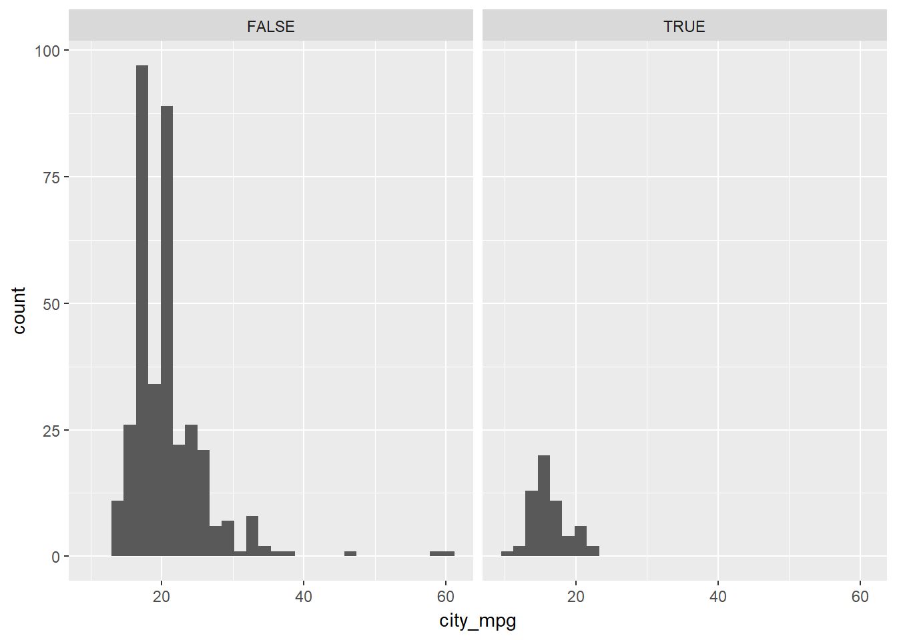
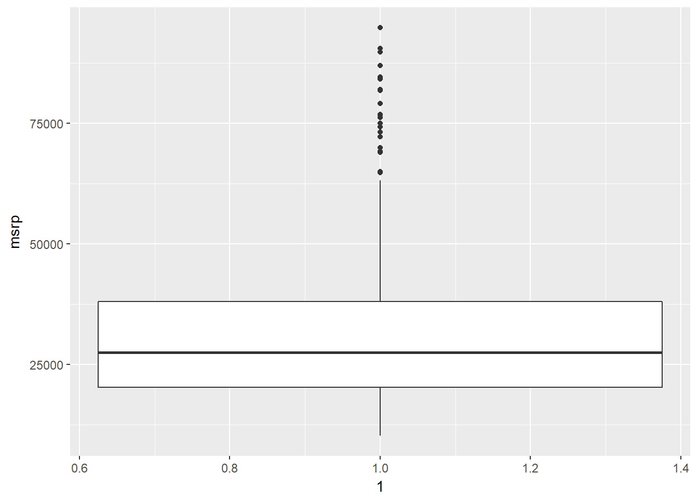

5 Exploratory Data Analysis
Notes taken during/inspired by the Datacamp course “Exploratory Data Analysis” by Andrew Bray.
5.1 Categorical Data
Common functions when looking at categorical, aka factors variables, are levels(df\(var) and to get a contigency or xtab table the table(df\)var1, df$var2). We can also create bar charts to visually represent the data using ggplot.
# Read in our dataset thanks to fivethirtyeight https://github.com/fivethirtyeight/data/tree/master/comic-characters
comics <- read.csv("https://raw.githubusercontent.com/fivethirtyeight/data/master/comic-characters/dc-wikia-data.csv", stringsAsFactors = TRUE)
comics$name <- as.character(comics$name)
# Check levels of align
levels(comics$ALIGN)## [1] "" "Bad Characters" "Good Characters"
## [4] "Neutral Characters" "Reformed Criminals"# Check the levels of gender
levels(comics$SEX)## [1] "" "Female Characters"
## [3] "Genderless Characters" "Male Characters"
## [5] "Transgender Characters"# Create a 2-way contingency table
table(comics$ALIGN, comics$SEX)##
## Female Characters Genderless Characters
## 25 220 0
## Bad Characters 63 597 11
## Good Characters 30 953 6
## Neutral Characters 7 196 3
## Reformed Criminals 0 1 0
##
## Male Characters Transgender Characters
## 356 0
## Bad Characters 2223 1
## Good Characters 1843 0
## Neutral Characters 359 0
## Reformed Criminals 2 0To simplify an analysis, it often helps to drop levels with small amounts of data. In R, this requires two steps: first filtering out any rows with the levels that have very low counts, then removing these levels from the factor variable with droplevels(). This is because the droplevels() function would keep levels that have just 1 or 2 counts; it only drops levels that don“t exist in a dataset.
# Load dplyr
library(dplyr)##
## Attaching package: 'dplyr'## The following objects are masked from 'package:stats':
##
## filter, lag## The following objects are masked from 'package:base':
##
## intersect, setdiff, setequal, union# Remove align level
comics <- comics %>%
filter(ALIGN != "Reformed Criminals") %>%
droplevels()While a contingency table represents the counts numerically, it“s often more useful to represent them graphically.
Here you“ll construct two side-by-side barcharts of the comics data. This shows that there can often be two or more options for presenting the same data. Passing the argument position =”dodge" to geom_bar() says that you want a side-by-side (i.e. not stacked) barchart.
# Load ggplot2
library(ggplot2)
# Create side-by-side barchart of gender by alignment
ggplot(comics, aes(x = ALIGN, fill = SEX)) +
geom_bar(position = "dodge")# Create side-by-side barchart of alignment by gender
ggplot(comics, aes(x = SEX, fill = ALIGN)) +
geom_bar(position = "dodge") +
theme(axis.text.x = element_text(angle = 90))
When creatign tables, it is often easier to look at proportions for patterns rather than counts. We can do this using conditional proportions, by using the prop.table(df_counts, n) where n is the number we want to condition our frequency/count table by, 1 = rows and 2 = columns.
tab <- table(comics$ALIGN, comics$SEX)
options(scipen = 999, digits = 2) # Print fewer digits
prop.table(tab) # Joint proportions (totals in the entire table)##
## Female Characters Genderless Characters
## 0.00363 0.03192 0.00000
## Bad Characters 0.00914 0.08661 0.00160
## Good Characters 0.00435 0.13826 0.00087
## Neutral Characters 0.00102 0.02843 0.00044
##
## Male Characters Transgender Characters
## 0.05165 0.00000
## Bad Characters 0.32250 0.00015
## Good Characters 0.26737 0.00000
## Neutral Characters 0.05208 0.00000prop.table(tab, 2) # Conditional on columns (column totals)##
## Female Characters Genderless Characters
## 0.200 0.112 0.000
## Bad Characters 0.504 0.304 0.550
## Good Characters 0.240 0.485 0.300
## Neutral Characters 0.056 0.100 0.150
##
## Male Characters Transgender Characters
## 0.074 0.000
## Bad Characters 0.465 1.000
## Good Characters 0.385 0.000
## Neutral Characters 0.075 0.000Here we see that approx. 49% of female characters are good, compared to 39% for males.
Bar charts can tell dramatically different stories depending on whether they represent counts or proportions and, if proportions, what the proportions are conditioned on. To demonstrate this difference, you“ll construct two barcharts in this exercise: one of counts and one of proportions.
# Plot of gender by align
ggplot(comics, aes(x = ALIGN, fill = SEX)) +
geom_bar()# Plot proportion of gender, conditional on align
ggplot(comics, aes(x = ALIGN, fill = SEX)) +
geom_bar(position = "fill")
Conditional barchart
Now, if you want to break down the distribution of alignment based on gender, you“re looking for conditional distributions.
You could make these by creating multiple filtered datasets (one for each gender) or by faceting the plot of alignment based on gender. As a point of comparison, we“ve provided your plot of the marginal distribution of alignment from the last exercise.
# Plot of alignment broken down by gender
ggplot(comics, aes(x = ALIGN)) +
geom_bar() +
facet_wrap(~ SEX)5.2 Numerical Data
# Data courtesy of http://www.idvbook.com/teaching-aid/data-sets/ with some variable name modifictions to match those in the exercise
library(readxl)
cars <- read_excel("04cars data.xls", sheet = 1)
cars <- cars[-2] # remove variable 2
# Rename vars
names(cars) <- c("name", "sports_car", "suv", "wagon", "minivan", "pickup", "all_wheel",
"rear_wheel", "msrp", "dealer_cost", "eng_size", "ncyl", "horsepwr",
"city_mpg","hwy_mpg", "weight", "wheel_base", "length", "width")
# Change data tpyes as needed
cars[2:7] <- sapply(cars[2:7],as.logical)
cars[c(8:10,12:19)] <- sapply(cars[c(8:10,12:19)],as.integer)## Warning in lapply(X = X, FUN = FUN, ...): NAs introduced by coercion
## Warning in lapply(X = X, FUN = FUN, ...): NAs introduced by coercion
## Warning in lapply(X = X, FUN = FUN, ...): NAs introduced by coercion
## Warning in lapply(X = X, FUN = FUN, ...): NAs introduced by coercion
## Warning in lapply(X = X, FUN = FUN, ...): NAs introduced by coercion
## Warning in lapply(X = X, FUN = FUN, ...): NAs introduced by coercion# Learn data structure
str(cars)## Classes 'tbl_df', 'tbl' and 'data.frame': 428 obs. of 19 variables:
## $ name : chr "Acura 3.5 RL 4dr" "Acura 3.5 RL w/Navigation 4dr" "Acura MDX" "Acura NSX coupe 2dr manual S" ...
## $ sports_car : logi FALSE FALSE FALSE TRUE FALSE FALSE ...
## $ suv : logi FALSE FALSE TRUE FALSE FALSE FALSE ...
## $ wagon : logi FALSE FALSE FALSE FALSE FALSE FALSE ...
## $ minivan : logi FALSE FALSE FALSE FALSE FALSE FALSE ...
## $ pickup : logi FALSE FALSE FALSE FALSE FALSE FALSE ...
## $ all_wheel : logi FALSE FALSE TRUE FALSE FALSE FALSE ...
## $ rear_wheel : int 0 0 0 1 0 0 0 0 0 0 ...
## $ msrp : int 43755 46100 36945 89765 23820 33195 26990 25940 31840 42490 ...
## $ dealer_cost: int 39014 41100 33337 79978 21761 30299 24647 23508 28846 38325 ...
## $ eng_size : num 3.5 3.5 3.5 3.2 2 3.2 2.4 1.8 3 3 ...
## $ ncyl : int 6 6 6 6 4 6 4 4 6 6 ...
## $ horsepwr : int 225 225 265 290 200 270 200 170 220 220 ...
## $ city_mpg : int 18 18 17 17 24 20 22 22 20 20 ...
## $ hwy_mpg : int 24 24 23 24 31 28 29 31 28 27 ...
## $ weight : int 3880 3893 4451 3153 2778 3575 3230 3252 3462 3814 ...
## $ wheel_base : int 115 115 106 100 101 108 105 104 104 105 ...
## $ length : int 197 197 189 174 172 186 183 179 179 180 ...
## $ width : int 72 72 77 71 68 72 69 70 70 70 ...# Create faceted histogram
ggplot(cars, aes(x = city_mpg)) +
geom_histogram() +
facet_wrap(~ suv)## `stat_bin()` using `bins = 30`. Pick better value with `binwidth`.## Warning: Removed 14 rows containing non-finite values (stat_bin).
The mileage of a car tends to be associated with the size of its engine (as measured by the number of cylinders). To explore the relationship between these two variables, you could stick to using histograms, but in this exercise you“ll try your hand at two alternatives: the box plot and the density plot.
# Filter cars with 4, 6, 8 cylinders
common_cyl <- filter(cars, ncyl %in% c(4,6,8))
# Create box plots of city mpg by ncyl
ggplot(common_cyl, aes(x = as.factor(ncyl), y = city_mpg)) +
geom_boxplot()## Warning: Removed 11 rows containing non-finite values (stat_boxplot).
# Create overlaid density plots for same data
ggplot(common_cyl, aes(x = city_mpg, fill = as.factor(ncyl))) +
geom_density(alpha = .3)## Warning: Removed 11 rows containing non-finite values (stat_density).
Now, turn your attention to a new variable: horsepwr. The goal is to get a sense of the marginal distribution of this variable and then compare it to the distribution of horsepower conditional on the price of the car being less than $25,000.
You“ll be making two plots using the”data pipeline" paradigm, where you start with the raw data and end with the plot.
In addition to indicating the center and spread of a distribution, a box plot provides a graphical means to detect outliers. You can apply this method to the msrp column (manufacturer“s suggested retail price) to detect if there are unusually expensive or cheap cars.
# Create hist
cars %>% ggplot(aes(horsepwr)) +
geom_histogram() +
ggtitle("ALL Cars")## `stat_bin()` using `bins = 30`. Pick better value with `binwidth`.
# Create hist of horsepwr for affordable cars
cars %>%
filter(msrp < 25000) %>%
ggplot(aes(horsepwr)) +
geom_histogram() +
xlim(c(90, 550)) +
ggtitle("Affordable Cars")## `stat_bin()` using `bins = 30`. Pick better value with `binwidth`.## Warning: Removed 1 rows containing non-finite values (stat_bin).## Warning: Removed 1 rows containing missing values (geom_bar).# Construct box plot of msrp
cars %>%
ggplot(aes(x = 1, y = msrp)) +
geom_boxplot()# Exclude outliers from data
cars_no_out <- cars %>%
filter(msrp < 100000)
# Construct box plot of msrp using the reduced dataset
cars_no_out %>%
ggplot(aes(x = 1, y = msrp)) +
geom_boxplot()
Consider two other columns in the cars dataset: city_mpg and width. Which is the most appropriate plot for displaying the important features of their distributions? Remember, both density plots and box plots display the central tendency and spread of the data, but the box plot is more robust to outliers.
# Create plot of city_mpg
cars %>%
ggplot(aes(x = width)) +
geom_density()## Warning: Removed 28 rows containing non-finite values (stat_density).
# Create plot of width
cars %>%
ggplot(aes(x = 1, y = city_mpg)) +
geom_boxplot()## Warning: Removed 14 rows containing non-finite values (stat_boxplot).Faceting is a valuable technique for looking at several conditional distributions at the same time. If the faceted distributions are laid out in a grid, you can consider the association between a variable and two others, one on the rows of the grid and the other on the columns.
# Facet hists using hwy mileage and ncyl
common_cyl %>%
ggplot(aes(x = hwy_mpg)) +
geom_histogram() +
facet_grid(ncyl ~ suv) +
ggtitle("Faceted heavy mpg histograms by No. of Cyl and Suv")## `stat_bin()` using `bins = 30`. Pick better value with `binwidth`.## Warning: Removed 11 rows containing non-finite values (stat_bin).5.3 Numerical Summaries
Throughout this chapter, you will use data from gapminder, which tracks demographic data in countries of the world over time. To learn more about it, you can bring up the help file with ?gapminder.
For this exercise, focus on how the life expectancy differs from continent to continent. This requires that you conduct your analysis not at the country level, but aggregated up to the continent level. This is made possible by the one-two punch of group_by() and summarize(), a very powerful syntax for carrying out the same analysis on different subsets of the full dataset.
library(gapminder)
# Create dataset of 2007 data
gap2007 <- filter(gapminder, year == 2007)
# Compute groupwise mean and median lifeExp
gap2007 %>%
group_by(continent) %>%
summarize(mean(lifeExp),
median(lifeExp))## # A tibble: 5 x 3
## continent `mean(lifeExp)` `median(lifeExp)`
## <fctr> <dbl> <dbl>
## 1 Africa 55 53
## 2 Americas 74 73
## 3 Asia 71 72
## 4 Europe 78 79
## 5 Oceania 81 81# Generate box plots of lifeExp for each continent
gap2007 %>%
ggplot(aes(x = continent, y = lifeExp)) +
geom_boxplot()
Let“s extend the powerful group_by() and summarize() syntax to measures of spread. If you”re unsure whether you“re working with symmetric or skewed distributions, it”s a good idea to consider a robust measure like IQR in addition to the usual measures of variance or standard deviation.
# Compute groupwise measures of spread
gap2007 %>%
group_by(continent) %>%
summarize(sd(lifeExp),
IQR(lifeExp),
n())## # A tibble: 5 x 4
## continent `sd(lifeExp)` `IQR(lifeExp)` `n()`
## <fctr> <dbl> <dbl> <int>
## 1 Africa 9.63 11.61 52
## 2 Americas 4.44 4.63 25
## 3 Asia 7.96 10.15 33
## 4 Europe 2.98 4.78 30
## 5 Oceania 0.73 0.52 2# Generate overlaid density plots
gap2007 %>%
ggplot(aes(x = lifeExp, fill = continent)) +
geom_density(alpha = 0.3)
# Compute stats for lifeExp in Americas
gap2007 %>%
filter(continent == "Americas") %>%
summarize(mean(lifeExp),
sd(lifeExp))## # A tibble: 1 x 2
## `mean(lifeExp)` `sd(lifeExp)`
## <dbl> <dbl>
## 1 74 4.4# Compute stats for population
gap2007 %>%
summarize(median(pop),
IQR(pop))## # A tibble: 1 x 2
## `median(pop)` `IQR(pop)`
## <dbl> <dbl>
## 1 10517531 26702008